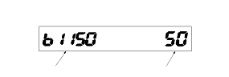

|
How to check for DTCs without the HDS (Use only if the HDS is unavailable)
Special Tools Required
MPCS short connector
07WAZ-0010100
If the HDS is unavailable, using the following method, you can check the B-CAN communication status and DTCs and some F-CAN communication status related with the gauge control module.
Check for DTCs
|
The unit that has been stored the code can be identified by the number shown.
NOTE: Also you can check the B-CAN communication status by following methods:
|
Segment display
 |